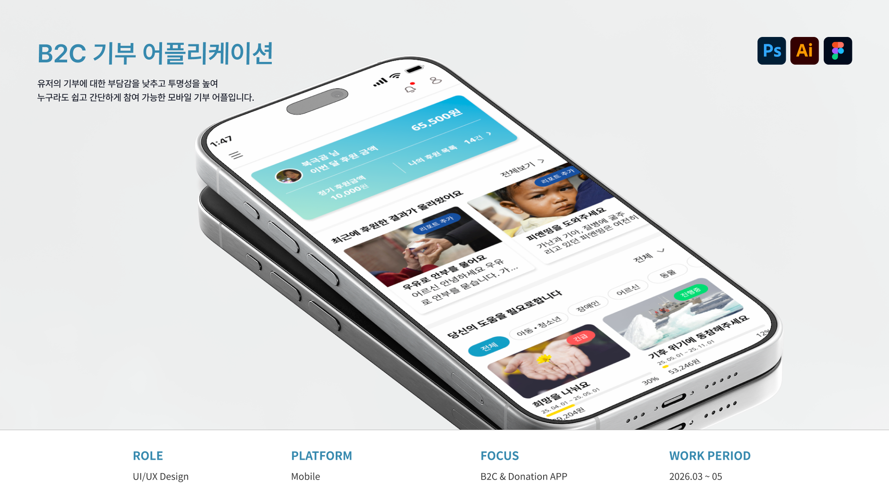

기부 어플리케이션

프로젝트 개요
프로젝트 목표
기부금의 사용-전달의 불투명 한 점을 개선하여 사용자가 기부 이후의 과정을 지속적으로 확인하고 신뢰할 수 있는 기부 경험을 목표로 한다.
디자인 목표
사용자에 맞는 기부정보를 제공할 수 있도록 우선순위를 명확하게 하여 기부처에 대한 신뢰를 형성하고 지속적인 긍정경험을 제공한다.
프로젝트 타입
기부처의 투명한 운영 방식을 통해 기부자의 지속적인 신뢰와 참여를 연결하는 기부 플랫폼
프로젝트 유형
Mobile UI, UX Research, End-to-End Design
제작 방향
평소 기부를 망설이는 가장 큰 이유 중 하나로 기부금의 사용 과정이 명확하게 전달되지 않는다는 점을 바탕으로 사용자가 기부 이후의 과정을 지속적으로 확인하고 신뢰할 수 있는 기부 경험을 목표로 서비스를 기획 하였습니다.
핵심 화면
기부 완료를 끝이 아닌 시작으로 정의하고, 기부금 사용 현황과 프로젝트 진행 과정을 지속적으로 확인할 수 있는 흐름을 설계했습니다. ‘사연 확인 → 기부 참여 → 지속적인 결과 확인’의 3단계로 정의한 뒤, 기부자와 수혜자, 프로젝트 담당자 간의 커뮤니케이션이 가능한 구조를 목표로 UI/UX를 설계하였습니다.


© 2026 Leesujin. All rights reserved.